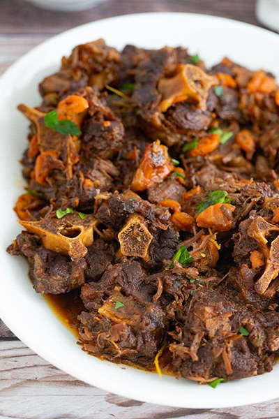

Back to Home
Oxtail Recipe

Decription
Oxtail, a rich and flavorful cut of meat, has been cherished in cuisines
worldwide for its incredible tenderness and robust taste. This comforting
recipe transforms oxtail into a melt-in-your-mouth dish that is perfect
for any occasion.
Ingredients
- 2 lbs oxtail, cut into pieces
- 2 tablespoons vegetable oil
- 1 large onion, chopped
- 2 carrots, sliced
- 3 garlic cloves, minced
- 1 tablespoon tomato paste
- 2 cups beef broth
- 1 cup red wine (optional)
- 2 sprigs fresh thyme
- 2 bay leaves
- Salt and black pepper to taste
- 1 tablespoon all-purpose flour (for thickening, optional)
Steps
- Season the oxtail pieces with salt and black pepper.
-
Heat the vegetable oil in a large pot or Dutch oven over medium heat.
Sear the oxtail pieces until browned on all sides. Remove and set aside.
-
In the same pot, add the chopped onion, carrots, and garlic. Sauté for
5-7 minutes until softened.
-
Stir in the tomato paste and cook for 1-2 minutes to enhance its flavor.
-
Deglaze the pot with red wine, if using, scraping up any browned bits
from the bottom of the pot. Let it simmer for 2-3 minutes to reduce
slightly.
-
Return the oxtail to the pot and pour in the beef broth. Add the thyme
and bay leaves.
-
Cover the pot and reduce the heat to low. Simmer for 2.5 to 3 hours,
stirring occasionally, until the oxtail is tender and the sauce has
thickened.
-
If the sauce is too thin, mix 1 tablespoon of flour with 2 tablespoons
of water to create a slurry, then stir it into the pot and let it cook
for another 10 minutes.
-
Taste and adjust the seasoning with additional salt and pepper, if
needed.
- Serve hot with your choice of side dish, and enjoy!